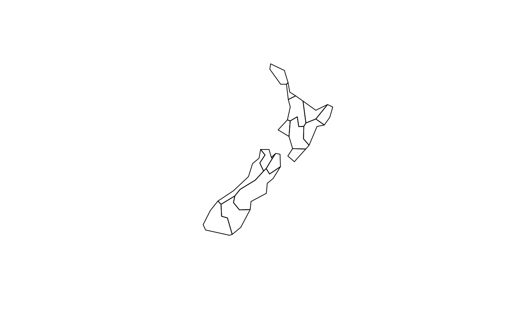

Chapter 5: Geometric operations
Robin Lovelace, Jakub Nowosad, Jannes Muenchow
2018-08-22
Source:vignettes/solutions05.Rmd
solutions05.RmdPrerequisites
The solutions assume the following packages are attached (other packages will be attached when needed):
library(sf)
library(raster)
library(tidyverse)
library(spData)
library(spDataLarge)
library(RQGIS)Chapter 5
Some of the exercises will use a vector (random_points) and raster dataset (ndvi) from the RQGIS package. It also uses a polygonal ‘convex hull’ derived from the vector dataset (ch) to represent the area of interest:
data(random_points)
data(ndvi)
ch = st_combine(random_points) %>%
st_convex_hull()- Generate and plot simplified versions of the
nzdataset. Experiment with different values ofkeep(ranging from 0.5 to 0.00005) forms_simplify()anddTolerance(from 100 to 100,000)st_simplify().- At what value does the form of the result start to break-down for each method, making New Zealand unrecognizable?
- Advanced: What is different about the geometry type of the results from
st_simplify()compared with the geometry type ofms_simplify()? What problems does this create and how can this be resolved?
plot(rmapshaper::ms_simplify(st_geometry(nz), keep = 1))
plot(rmapshaper::ms_simplify(st_geometry(nz), keep = 0.5))
plot(rmapshaper::ms_simplify(st_geometry(nz), keep = 0.05))
# Starts to breakdown here at 0.5% of the points:
plot(rmapshaper::ms_simplify(st_geometry(nz), keep = 0.005))
# At this point no further simplification changes the result
plot(rmapshaper::ms_simplify(st_geometry(nz), keep = 0.0005))
plot(rmapshaper::ms_simplify(st_geometry(nz), keep = 0.00005))
plot(st_simplify(st_geometry(nz), dTolerance = 100))
plot(st_simplify(st_geometry(nz), dTolerance = 1000))
# Starts to breakdown at 10 km:
plot(st_simplify(st_geometry(nz), dTolerance = 10000))
plot(st_simplify(st_geometry(nz), dTolerance = 100000))
plot(st_simplify(st_geometry(nz), dTolerance = 100000, preserveTopology = TRUE))
plot(rmapshaper::ms_simplify(st_geometry(nz), keep = 0.05))
plot(rmapshaper::ms_simplify(st_geometry(nz), keep = 0.05))
# Problem: st_simplify returns POLYGON and MULTIPOLYGON results, affecting plotting
# Cast into a single geometry type to resolve this
nz_simple_poly = st_simplify(st_geometry(nz), dTolerance = 10000) %>%
st_sfc() %>%
st_cast("POLYGON")
#> Warning in st_cast.MULTIPOLYGON(X[[i]], ...): polygon from first part only
#> Warning in st_cast.MULTIPOLYGON(X[[i]], ...): polygon from first part only
nz_simple_multipoly = st_simplify(st_geometry(nz), dTolerance = 10000) %>%
st_sfc() %>%
st_cast("MULTIPOLYGON")
plot(nz_simple_poly)
length(nz_simple_poly)
#> [1] 16
nrow(nz)
#> [1] 16- In the first exercise in Chapter @ref(spatial-operations) it was established that Canterbury region had 61 of the 101 highest points in New Zealand. Using
st_buffer(), how many points innz_heightare within 100 km of Canterbury?
canterbury = nz[nz$Name == "Canterbury Region", ]
cant_buff = st_buffer(canterbury, 100)
nz_height_near_cant = nz_height[cant_buff, ]
nrow(nz_height_near_cant) # 66 - 5 more
#> [1] 0- Find the geographic centroid of New Zealand. How far is it from the geographic centroid of Canterbury?
cant_cent = st_centroid(canterbury)
#> Warning in st_centroid.sf(canterbury): st_centroid assumes attributes are
#> constant over geometries of x
nz_centre = st_centroid(st_union(nz))
st_distance(cant_cent, nz_centre) # 234 km
#> Units: m
#> [,1]- Most world maps have a north-up orientation. A world map with a south-up orientation could be created by a reflection (one of the affine transformations not mentioned in @ref(affine-transformations)) of the
worldobject’s geometry. Write code to do so. Hint: you need to use a two-element vector for this transformation.- Bonus: create a upside down map of your country.
world_sfc = st_geometry(world)
world_sfc_mirror = world_sfc * c(1, -1)
plot(world_sfc)
plot(world_sfc_mirror)
us_states_sfc = st_geometry(us_states)
us_states_sfc_mirror = us_states_sfc * c(1, -1)
plot(us_states_sfc)
plot(us_states_sfc_mirror)
## nicer plot
# library(ggrepel)
# us_states_sfc_mirror_labels = st_centroid(us_states_sfc_mirror) %>%
# st_coordinates() %>%
# as_data_frame() %>%
# mutate(name = us_states$NAME)
# us_states_sfc_mirror_sf = st_set_geometry(us_states, us_states_sfc_mirror)
# ggplot(data = us_states_sfc_mirror_sf) +
# geom_sf(color = "white") +
# geom_text_repel(data = us_states_sfc_mirror_labels, mapping = aes(X, Y, label = name), size = 3, min.segment.length = 0) +
# theme_void() - Subset the point in
pthat is contained withinxandy(see section @ref(clipping) and Figure @ref(fig:venn-clip)).- Using base subsetting operators.
- Using an intermediary object created with
st_intersection().
# FIX NEEDED
p_in_y = p[y]
p_in_xy = p_in_y[x]
x_and_y = st_intersection(x, y)
p[x_and_y]- Calculate the length of the boundary lines of US states in meters. Which state has the longest border and which has the shortest? Hint: The
st_lengthfunction computes the length of aLINESTRINGorMULTILINESTRINGgeometry.
us_states2163 = st_transform(us_states, 2163)
us_states_bor = st_cast(us_states2163, "MULTILINESTRING")
us_states_bor$borders = st_length(us_states_bor)
arrange(us_states_bor, borders)
#> Simple feature collection with 49 features and 7 fields
#> geometry type: MULTILINESTRING
#> dimension: XY
#> bbox: xmin: -2031905 ymin: -2116610 xmax: 2514262 ymax: 731601.3
#> epsg (SRID): 2163
#> proj4string: +proj=laea +lat_0=45 +lon_0=-100 +x_0=0 +y_0=0 +a=6370997 +b=6370997 +units=m +no_defs
#> First 10 features:
#> GEOID NAME REGION AREA total_pop_10
#> 1 11 District of Columbia South 178.210 km^2 584400
#> 2 44 Rhode Island Norteast 2743.057 km^2 1056389
#> 3 10 Delaware South 5181.844 km^2 881278
#> 4 09 Connecticut Norteast 12976.588 km^2 3545837
#> 5 34 New Jersey Norteast 20273.671 km^2 8721577
#> 6 50 Vermont Norteast 24866.158 km^2 624258
#> 7 33 New Hampshire Norteast 24026.479 km^2 1313939
#> 8 25 Massachusetts Norteast 20910.750 km^2 6477096
#> 9 45 South Carolina South 80903.582 km^2 4511428
#> 10 18 Indiana Midwest 93648.395 km^2 6417398
#> total_pop_15 borders geometry
#> 1 647484 60322.91 m MULTILINESTRING ((1950825 -...
#> 2 1053661 304593.73 m MULTILINESTRING ((2332242 4...
#> 3 926454 408048.55 m MULTILINESTRING ((2036308 -...
#> 4 3593222 514090.14 m MULTILINESTRING ((2142347 2...
#> 5 8904413 746942.10 m MULTILINESTRING ((2057740 -...
#> 6 626604 778203.70 m MULTILINESTRING ((2048149 3...
#> 7 1324201 782643.83 m MULTILINESTRING ((2182313 3...
#> 8 6705586 1017375.49 m MULTILINESTRING ((2416684 3...
#> 9 4777576 1275279.82 m MULTILINESTRING ((1531823 -...
#> 10 6568645 1436287.75 m MULTILINESTRING ((1031129 -...
arrange(us_states_bor, -borders)
#> Simple feature collection with 49 features and 7 fields
#> geometry type: MULTILINESTRING
#> dimension: XY
#> bbox: xmin: -2031905 ymin: -2116610 xmax: 2514262 ymax: 731601.3
#> epsg (SRID): 2163
#> proj4string: +proj=laea +lat_0=45 +lon_0=-100 +x_0=0 +y_0=0 +a=6370997 +b=6370997 +units=m +no_defs
#> First 10 features:
#> GEOID NAME REGION AREA total_pop_10 total_pop_15
#> 1 48 Texas South 687714.3 km^2 24311891 26538614
#> 2 06 California West 409747.1 km^2 36637290 38421464
#> 3 26 Michigan Midwest 151119.0 km^2 9952687 9900571
#> 4 12 Florida South 151052.0 km^2 18511620 19645772
#> 5 30 Montana West 380829.2 km^2 973739 1014699
#> 6 16 Idaho West 216512.7 km^2 1526797 1616547
#> 7 27 Minnesota Midwest 218566.5 km^2 5241914 5419171
#> 8 51 Virginia South 105404.7 km^2 7841754 8256630
#> 9 35 New Mexico West 314886.1 km^2 2013122 2084117
#> 10 53 Washington West 175436.0 km^2 6561297 6985464
#> borders geometry
#> 1 4961585 m MULTILINESTRING ((-269040 -...
#> 2 3810226 m MULTILINESTRING ((-1717278 ...
#> 3 3574933 m MULTILINESTRING ((1110644 1...
#> 4 2951059 m MULTILINESTRING ((1853170 -...
#> 5 2821788 m MULTILINESTRING ((-1161496 ...
#> 6 2568711 m MULTILINESTRING ((-1294787 ...
#> 7 2563963 m MULTILINESTRING ((202211.8 ...
#> 8 2405725 m MULTILINESTRING ((2099962 -...
#> 9 2378721 m MULTILINESTRING ((-803303.1...
#> 10 2340809 m MULTILINESTRING ((-1658594 ...- Aggregate the raster counting high points in New Zealand (created in the previous exercise), reduce its geographic resolution by half (so cells are 6 by 6 km) and plot the result.
- Resample the lower resolution raster back to a resolution of 3 km. How have the results changed?
- Name two advantages and disadvantages of reducing raster resolution.
# FIX NEEDED
nz_raster_low = raster::aggregate(nz_raster, fact = 2, fun = sum)
res(nz_raster_low)
nz_resample = resample(nz_raster_low, nz_raster)
plot(nz_raster_low)
plot(nz_resample) # the results are spread over a greater area and there are border issues
plot(nz_raster)
# advantage: lower memory use
# advantage: faster processing
# advantage: good for viz in some cases
# disadvantage: removes geographic detail
# disadvantage: another processing step- Crop the
ndviraster using (1) therandom_pointsdataset and (2) thechdataset. Are there any difference in the output maps? Next, maskndviusing these two datasets. Can you see any difference now? How can you explain that?
plot(ndvi)
plot(st_geometry(random_points), add = TRUE)
plot(ch, add = TRUE)
ndvi_crop1 = crop(ndvi, as(random_points, "Spatial"))
ndvi_crop2 = crop(ndvi, as(ch, "Spatial"))
plot(ndvi_crop1)
plot(ndvi_crop2)
ndvi_mask1 = mask(ndvi, as(random_points, "Spatial"))
ndvi_mask2 = mask(ndvi, as(ch, "Spatial"))
plot(ndvi_mask1)
plot(ndvi_mask2) 1. Firstly, extract values from
1. Firstly, extract values from ndvi at the points represented in random_points. Next, extract average values of ndvi using a 90 buffer around each point from random_points and compare these two sets of values. When would extracting values by buffers be more suitable than by points alone?
random_points_buf = st_buffer(random_points, dist = 90)
plot(ndvi)
plot(st_geometry(random_points_buf), add = TRUE)
plot(ch, add = TRUE)
random_points$ndvi = raster::extract(ndvi, as(random_points, "Spatial"), buffer = 90, fun = mean)
random_points$ndvi2 = raster::extract(ndvi, as(random_points, "Spatial"))
plot(random_points$ndvi, random_points$ndvi2) 1. Subset points higher than 3100 meters in New Zealand (the
1. Subset points higher than 3100 meters in New Zealand (the nz_height object) and create a template raster with a resolution of 3km. Using these objects: - Count numbers of the highest points in each grid cell. - Find the maximum elevation in each grid cell.
nz_height3100 = dplyr::filter(nz_height, elevation > 3100)
new_graticule = st_graticule(nz_height3100, datum = 2193)
plot(st_geometry(nz_height3100), graticule = new_graticule, axes = TRUE)
nz_template = raster(extent(nz_height3100), resolution = 3000,
crs = st_crs(nz_height3100)$proj4string)
nz_raster = rasterize(nz_height3100, nz_template,
field = "elevation", fun = "count")
plot(nz_raster)
 1. Polygonize the
1. Polygonize the grain dataset and filter all squares representing clay. - Name two advantages and disadvantages of vector data over raster data. - At which points would it be useful to convert rasters to vectors in your work?
grain_poly = rasterToPolygons(grain) %>%
st_as_sf()
levels(grain)
#> [[1]]
#> ID VALUE
#> 1 1 clay
#> 2 2 silt
#> 3 3 sand
clay = dplyr::filter(grain_poly, layer == 1)
plot(clay)# advantages: can be used to subset other vector objects
# can do affine transformations and use sf/dplyr verbs
# disadvantages: better consistency, fast processing on some operations, functions developed for some domains